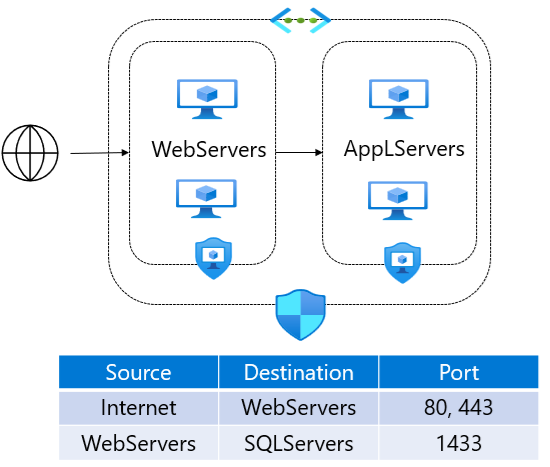

You can implement application security groups (ASGs) in your Azure virtual network to logically group your virtual machines by workload. You can then define your network security group rules based on your application security groups.
Things to know about using application security groups
Application security groups work in the same way as network security groups, but they provide an application-centric way of looking at your infrastructure. You join your virtual machines to an application security group. Then you use the application security group as a source or destination in the network security group rules.
Let's examine how to implement application security groups by creating a configuration for an online retailer. In our example scenario, we need to control network traffic to virtual machines in application security groups.

Scenario requirements
Here are the scenario requirements for our example configuration:
- In this scenario, there are two tiers: web servers and application servers.
- The web servers handle HTTP and HTTPS internet traffic.
- The application servers process SQL requests from the web servers.
Solution
For our scenario, we need to build the following configuration:
-
Create application security groups for each tier.
-
For each virtual machine server, assign its network interface to the appropriate application security group.
-
Create the network security group and security rules.
-
Rule 1 : Set Priority to 100. Allow access from the internet to the web servers machines from HTTP port 80 and HTTPS port 443.
Rule 1 has the lowest priority value, so it has precedence over the other rules in the group. Customer access to our online catalog is paramount in our design.
-
Rule 2 : Set Priority to 110. Allow access from the web servers to application servers over HTTPS port 1433.
-
Rule 3 : Set Priority to 120. Deny access from anywhere to application server machines over HTTPS port 1433.
The combination of Rule 2 and Rule 3 ensures that only our web servers can access our database servers. This security configuration protects our inventory databases from outside attack.
-
Things to consider when using application security groups
There are several advantages to implementing application security groups in your virtual networks.
-
Consider IP address maintenance . When you control network traffic by using application security groups, you don't need to configure inbound and outbound traffic for specific IP addresses. If you have many virtual machines in your configuration, it can be difficult to specify all of the affected IP addresses. As you maintain your configuration, the number of your servers can change. These changes can require you to modify how you support different IP addresses in your security rules.
-
Consider no subnets . By organizing your virtual machines into application security groups, you don't need to also distribute your servers across specific subnets. You can arrange your servers by application and purpose to achieve logical groupings.
-
Consider simplified rules . Application security groups help to eliminate the need for multiple rule sets. You don't need to create a separate rule for each virtual machine. You can dynamically apply new rules to designated application security groups. New security rules are automatically applied to all the virtual machines in the specified application security group.
-
Consider workload support . A configuration that implements application security groups is easy to maintain and understand because the organization is based on workload usage. Application security groups provide logical arrangements for your applications, services, data storage, and workloads.
-
Consider service tags . Service Tags represent a group of IP address prefixes from a specific Azure service. They help minimize the complexity of frequent updates on network security rules. While service tags are used to simplify the management of IP addresses for Azure services, ASGs are used to group VMs and manage network security policies based on those groups.